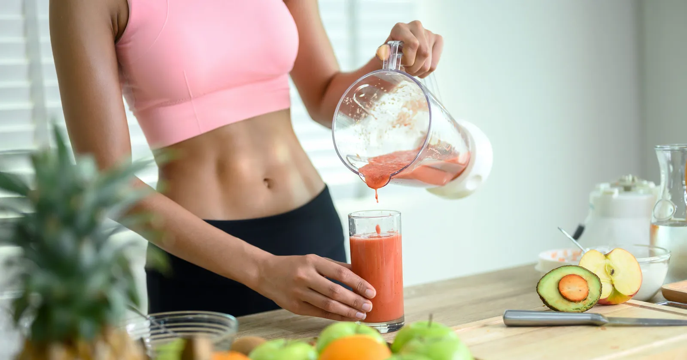
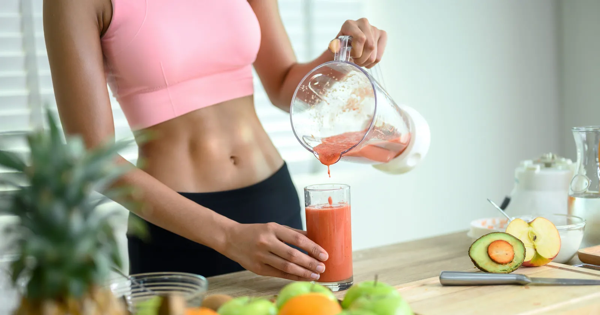

Bienvenido a Salud Integral
¡Bienvenido a Salud Integral! Somos tu plataforma confiable y completa para cuidar de tu bienestar. Aquà podrás acceder a una variedad de recursos diseñados para ayudarte a vivir de manera más saludable y equilibrada. Ofrecemos consejos diarios prácticos, artÍculos elaborados por expertos en salud y bienestar, videos educativos que te motivarán a adoptar hábitos positivos, y recomendaciones personalizadas adaptadas a tus necesidades. Nuestro objetivo es acompañarte en tu camino hacia una vida más plena, activa y saludable. Explora nuestro contenido y comienza hoy mismo a priorizar tu salud y bienestar en cada aspecto de tu vida.
Explorar más 

.jpeg)
.jpeg)
Registro de Usuario
Iniciar Sesión
Mi Perfil
Tips diarios
ArtÍculos de Expertos
Manejo del Estrés
Técnicas efectivas para reducir el estrés y mejorar tu bienestar emocional.
Leer másHidratación y Salud
La importancia de mantenerse bien hidratado para optimizar funciones corporales.
Leer másSalud Mental
Estrategias para fortalecer tu salud mental y afrontar los desafÍos diarios.
Leer másHábitos de Vida Activos
Incorpora pequeñas actividades en tu rutina para mantenerte activo y saludable.
Leer másPrevención de Enfermedades
Medidas básicas para protegerte y prevenir enfermedades comunes.
Leer másMeditación y Relajación
Aprende técnicas de meditación para mejorar tu concentración y reducir el estrés.
Leer másMi Progreso
Visualiza tu avance semanal hacia tus metas de bienestar.